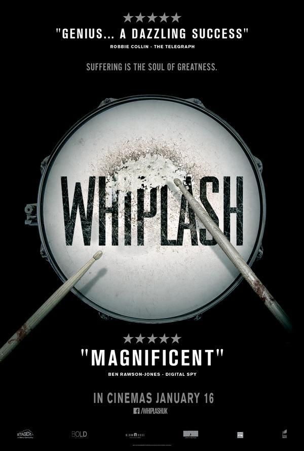
WHIPLASH (2014)
Andrew Neiman és un jove i ambiciós bateria de jazz. Marcat pel fracàs de la carrera literària del seu pare, està obsessionat amb aconseguir el cim dins de l'elitista conservatori de música de la Costa Est en el qual estudia.
★★★★★
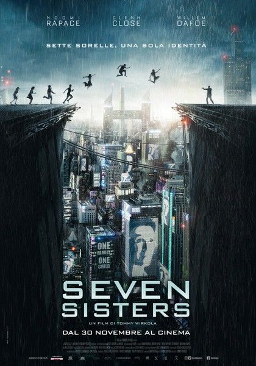
7 GERMANES (2017)
En un futur en el qual la sobrepoblació i la fam han obligat el govern a implantar una política d'un únic fill, set germanes, cadascuna amb el nom d'un dia de la setmana, lluiten per sobreviure i passar inadvertides fent-se passar per una sola persona.
★★★★★
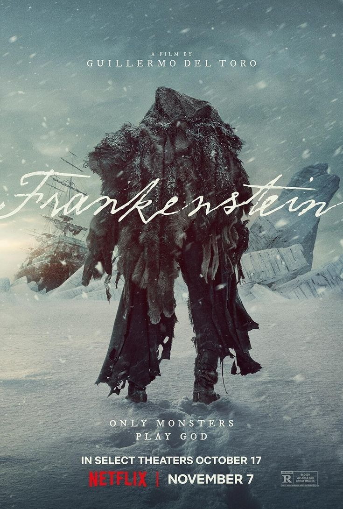
FRANKENSTEIN (2025)
El científic Víctor Frankenstein dona vida a una criatura acoblada amb cadàvers. Horroritzat per la seva creació, Víctor l'abandona, provocant que l'ésser, intel·ligent però solitari, busqui venjança contra ell i la seva família després de ser rebutjat per la societat.
★★★★☆
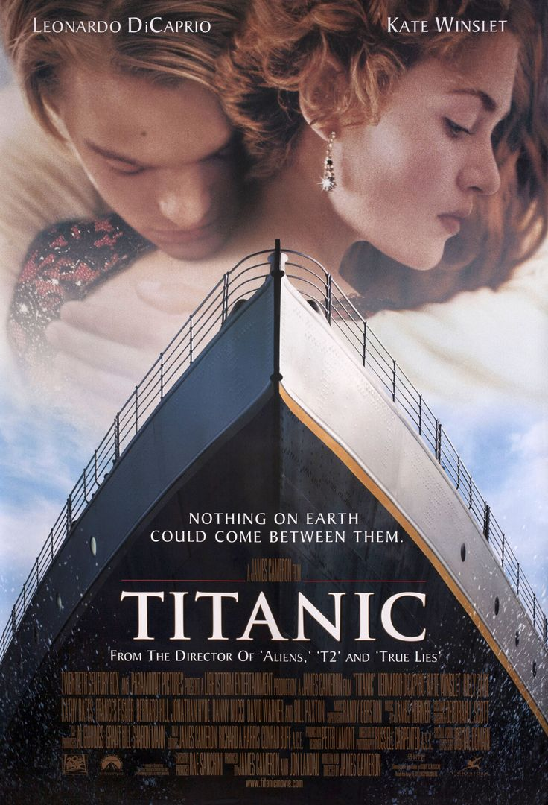
TITÀNIC (1997)
Dos joves de diferents classes socials, Jack (un artista humil) i Rose (una jove de classe alta), s'enamoren en el viatge inaugural del Titanic malgrat les traves que posen la mare d'ella i Calç en la seva relació. Però el destí d'aquest amor es veu truncat per un iceberg.
★★★★★
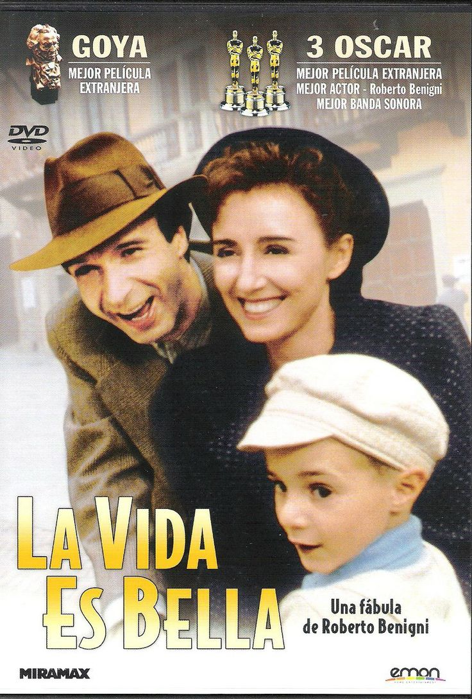
LA VIDA ÉS BELLA (1997)
En 1939, Guido arriba a Arezzo amb la intenció d'obrir una llibreria. Allí coneix a Dora amb la que es casarà i tindràn un fill. Durant la guerra, Guido construeix una elaborada fantasia per a protegir el seu fill i fer-li creure que la situació és tan sols un joc.
★★★★★
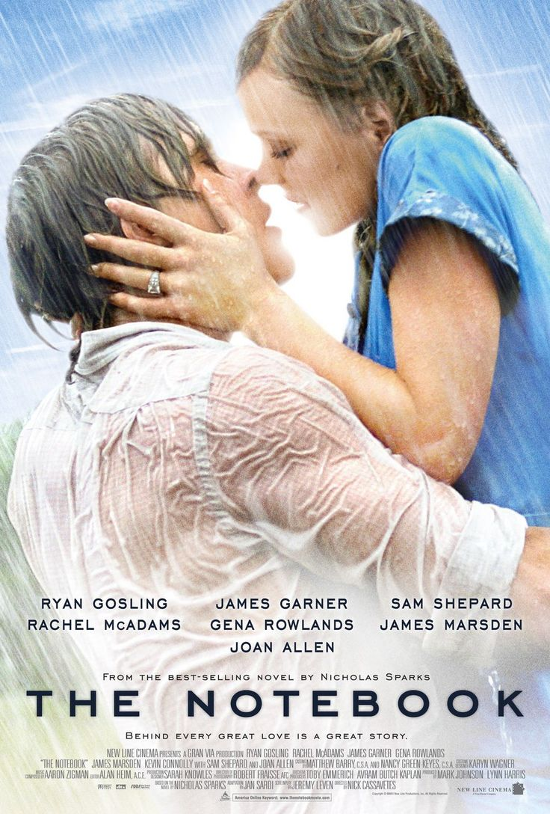
EL DIARI DE NOAH (2004)
En una residència, un ancià li llegeix a una dona la història de Noah i Allie, dos joves de Carolina del Nord, de diferents classes socials que van viure un apassionat amor d'estiu abans de ser separats per les seves famílies i la guerra.
★★★★★
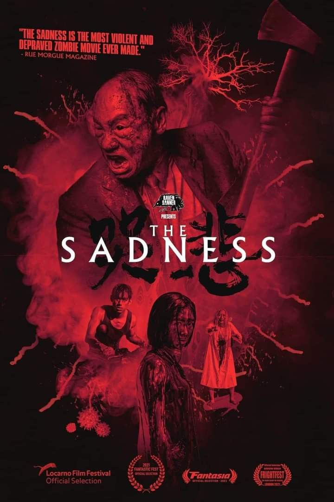
THE SADNESS(2021)
Una jove parella intenta retrobar-se en una ciutat devastada per un virus mutant. Aquesta plaga anul·la la moral i converteix les víctimes en sàdics assedegats de sang, totalment conscients dels seus actes. Mentre la societat col·lapsa, hauran de sobreviure al malson.
★★★★☆
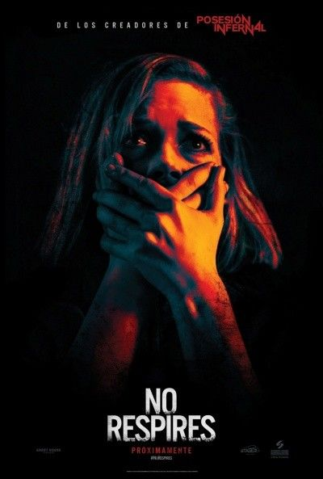
NO RESPIRES (2016)
Rocky, Alex i Mone preparen un robatori, el que permetrà a Rocky sortir de Detroit i salvar a la seva germana petita del maltractament de la seva mare. El seu següent objectiu serà la casa mig abandonada d'un home cec que és posseïdor d'una petita fortuna.
★★★★★
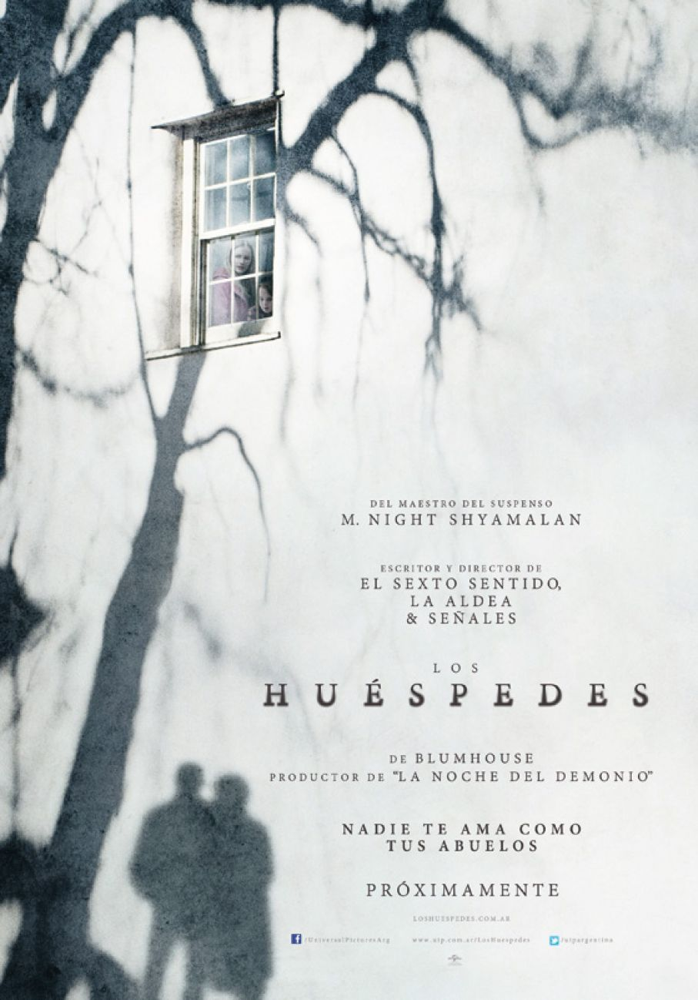
ELS HOSTES (2015)
Dos germans passen una setmana en la granja dels seus avis. Els nens descobreixen que la parella anciana amaga un secret misteriós i que estan implicats en un esdeveniment inquietant. Les possibilitats de fugir cada cop són menys.
★★★★☆
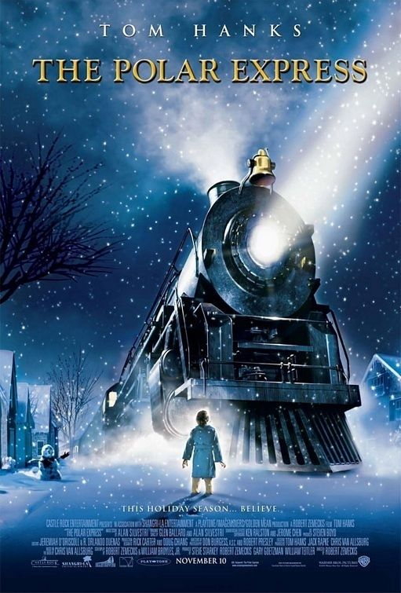
THE POLAR EXPRESS (2004)
És Nadal, i un nen intenta sentir la dringadissa de les campanetes del trineu de Santa Claus. A només cinc minuts per a la mitjanit, un soroll sobresalta al noi: un lluent tren negre frena enfront de la seva casa per a portar-ho al Pol Nord.
★★★★★
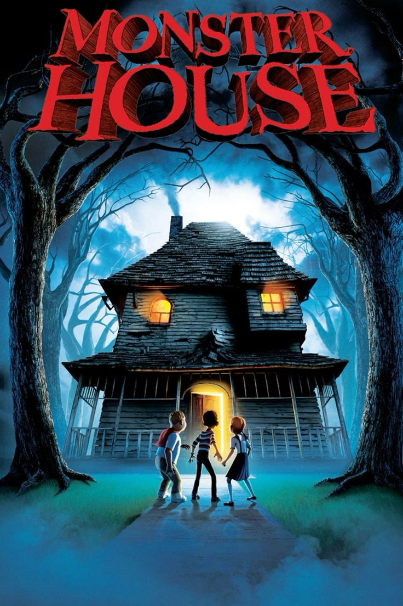
MONSTER HOUSE (2006)
D.J. Walters està convençut que a la casa d'un veí ocorre una cosa estranya. Quan la seva amiga Jenny està a punt de ser engolida per la misteriosa casa, ningú creï als espantats nois; així que decideixen investigar l'enigma pel seu compte.
★★★★★
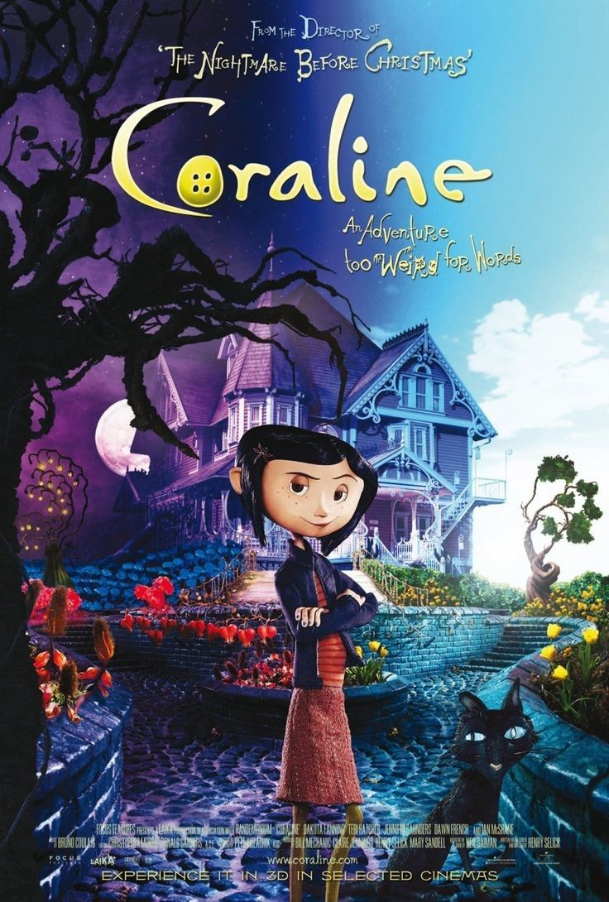
CORALINE (2009)
Coraline és una jove avorrida que descobreix que la paret tapiada després d'una porta del seu pis condueix a un altre món, amb una altra mare i un altre pare. Coraline haurà de confiar en el seu enginy i valentia per a tornar a casa i salvar a la seva família.
★★★★★